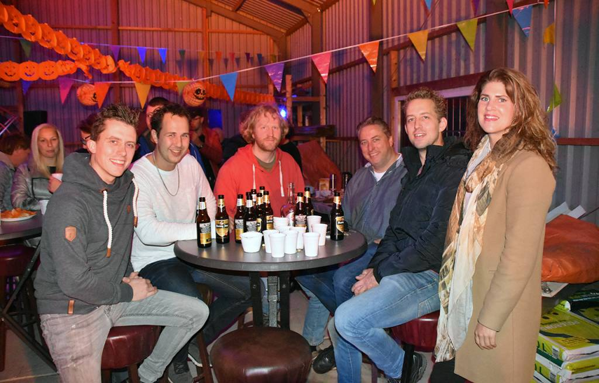
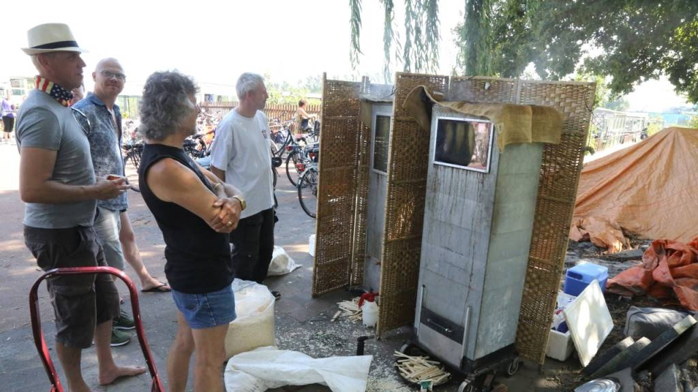
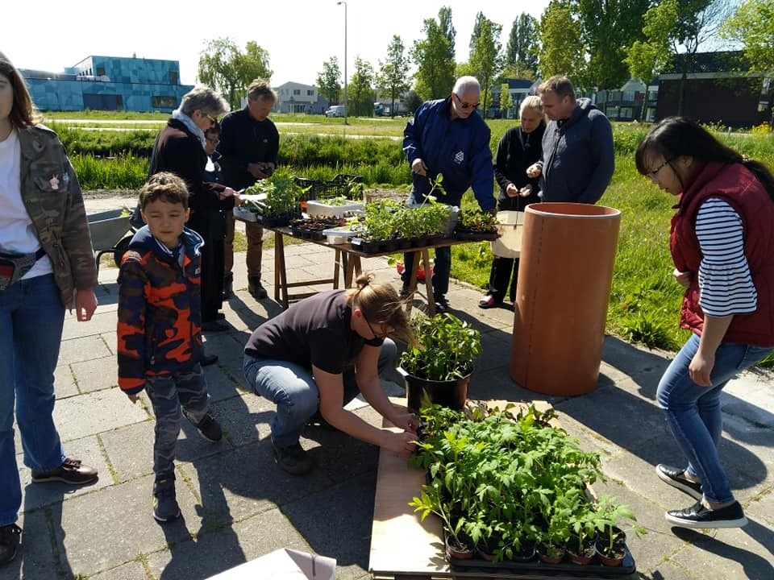

Volkstuinvereniging Tuinvreugde sluit seizoen af met oogstfeest
2 november 2019
Voor de gelegenheid was de loods feestelijk versierd met slingers en feestverlichting.
Hapjes en drankjes waren er volop. Rond 16.00 uur druppelden de eerste leden binnen,
en met uiteindelijk totaal zo’n zestig tuinders werd het een gezellige bedoening in de loods,
wat nog tot 22.00 uur duurde.
De organisatie van het feest lag in handen van Jan de Wit
(sinds een jaar lid) en Nico Vink (2 jaar lid), ondersteund door Cees Zwarthoed (voorzitter
van Tuindersvereniging Tuinvreugde). Er viel genoeg te vieren voor de tuinvereniging.
In zijn toespraak gaf Cees Zwarthoed een indrukwekkende opsomming: „We hebben de afgelopen
maanden zelf riolering en drainagesystemen aangelegd, we hebben een nieuw administratiesysteem
en een bijentuin, maar denk bijvoorbeeld ook aan het straatwerk, de succesvolle Open Dag die we
organiseerden in augustus, de vele nieuwe huisjes en de daken op de huisjes die allemaal zijn vervangen
van asbest naar kunststof.”
Met het feest wilde het bestuur alle leden bedanken die daar op een of andere manier bij betrokken zijn geweest. Ook was het feest een manier om het contact tussen de tuinders te versterken en de nieuwe tuinders welkom te heten. „Een goede
relatie met medetuinders maakt het tuinieren nog leuker”, aldus Cees Zwarthoed. „We kunnen namelijk veel van elkaar leren.”
Bron:
Volkstuinvereniging Tuinvreugde sluit seizoen af met oogstfeest. (2019, 10 november). Geraadpleegd op 12 januari 2020, van
https://www.nieuw-volendam.nl/nieuwvolendam/edam-volendam/volendam/algemeen/volkstuinvereniging-tuinvreugde-sluit-seizoen-af-met-oogstfeest
Drukbezochte Open Dag van de Tuinvereniging
25 augustus 2019
Tuinvereniging “Tuinvreugde” organiseerde afgelopen
zondag vanaf 11.00 uur een Open Dag. Belangstellenden
konden een kijkje nemen op het volkstuinencomplex aan
de Dijkgraaf de Ruiterlaan.

Zowat alle tuinliefhebbers waren present om rondleidingen
te verzorgen en te vertellen over het zelf kweken van
groenten en fruit, waar men ook van kon proeven. Bij de
entree werd makreel gerookt, gezellige plaatjes werden
gedraaid, hapjes en drankjes geserveerd en de kinderen
konden zich vermaken met tekenen of zich laten schminken.
Er was een prijsuitreiking voor de zwaarste zelfgekweekte
courgette en grootste zonnebloem. Mede door het stralende
zomerse weer was het de hele dag een komen en gaan van
bezoekers en werd het een geslaagde Open Dag.
Bron:
Drukbezochte Open Dag van de Tuinvereniging. (2019, 30 augustus). Geraadpleegd op 12 januari 2020, van https://www.nieuw-volendam.nl/nieuwvolendam/edam-volendam/volendam/algemeen/drukbezochte-open-dag-van-de-tuinvereniging
Ruilbeurs Tuinvreugde Volendam
11 mei 2019
Als je eenmaal tomaten en aardbeien van eigen kweek hebt
geproefd, weet je het zeker: dit is de smaak van zon en
zomer. Nu is zelf tomaten zaaien bepaald niet moeilijk.
Het was dus niet verrassend dat op de eerste ruilbeurs
op het volkstuinencomplex Tuinvreugde veel tuinders hun
overtollige tomatenstekjes kwamen aanbieden.
Tegelijkertijd waren diezelfde tomatenplanten zeer in
trek. Ieder heeft zo zijn eigen soorten, en door te
ruilen krijg je toch meer variatie in je eigen collectie…de
kerstomaatjes waren vaak al vergeven voor ze de ruiltafel
hadden bereikt.

Een variëteit van planten is van
eigenaar verwisseld: bijzondere koolsoorten en kruiden,
pepers, paprika’s, courgettes, bloemen (jawel, voor de
bijen), maar ook potten en potjes, zaden en overheerlijke
gevulde koeken. Gezegend met een heerlijk zonnetje werd het
‘pleintje’ voor de kantine een gezellige ontmoetingsplaats
voor oude en nieuwe tuinders. Voor herhaling vatbaar dus!
Benieuwd wat voor oogst al die zaden en stekjes gaan opleveren?
Op zondag 25 augustus houden we Open Dag. U bent van harte welkom.